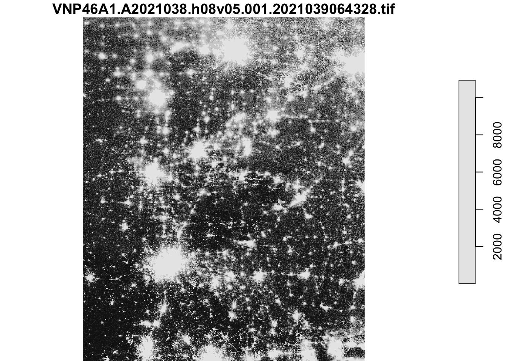
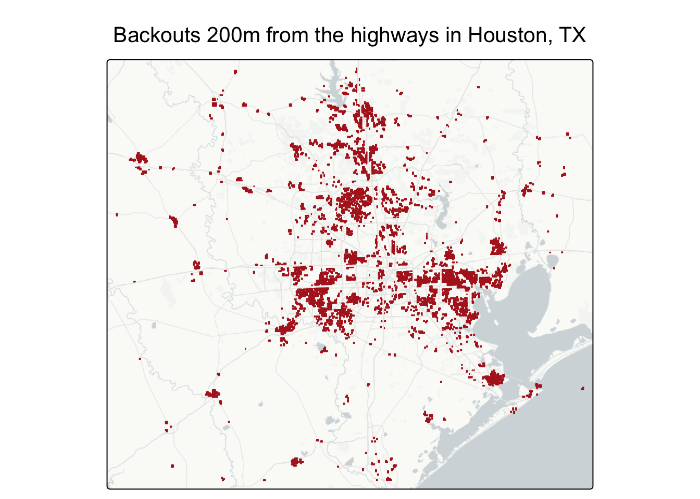

── Conflicts ────────────────────────────────────────── tidyverse_conflicts() ──
✖ tidyr::extract() masks terra::extract()
✖ dplyr::filter() masks stats::filter()
✖ dplyr::lag() masks stats::lag()
ℹ Use the conflicted package (<http://conflicted.r-lib.org/>) to force all conflicts to become errors
Loading required package: abind
Loading required package: sf
Linking to GEOS 3.13.0, GDAL 3.8.5, PROJ 9.5.1; sf_use_s2() is TRUE
library(raster)
Loading required package: sp
Attaching package: 'raster'
The following object is masked from 'package:dplyr':
select
# Download Data # Night lights data (VNP46A1)# with read_stars()... sf light_1 <-read_stars(here::here("data", "VNP46A1", "VNP46A1.A2021038.h08v05.001.2021039064328.tif"))light_2 <-read_stars(here::here("data", "VNP46A1", "VNP46A1.A2021038.h08v06.001.2021039064329.tif"))light_3 <-read_stars(here::here("data", "VNP46A1", "VNP46A1.A2021047.h08v05.001.2021048091106.tif"))light_4 <-read_stars(here::here("data", "VNP46A1", "VNP46A1.A2021047.h08v06.001.2021048091105.tif"))# With rast()... terra#l1 <- rast("data/VNP46A1/VNP46A1.A2021038.h08v05.001.2021039064328.tif")#l2 <- rast("data/VNP46A1/VNP46A1.A2021038.h08v06.001.2021039064329.tif")#l3 <- rast("data/VNP46A1/VNP46A1.A2021047.h08v05.001.2021048091106.tif")#l4 <- rast("data/VNP46A1/VNP46A1.A2021047.h08v06.001.2021048091105.tif")# Road Data roads <-st_read(here::here("data", "gis_osm_roads_free_1.gpkg"), query ="SELECT * FROM gis_osm_roads_free_1 WHERE fclass='motorway'")
Reading query `SELECT * FROM gis_osm_roads_free_1 WHERE fclass='motorway''
from data source `/Users/meganhessel/Documents/MEDS/EDS223/homework/eds223_extreme_weather_impacts_TX/data/gis_osm_roads_free_1.gpkg'
using driver `GPKG'
Simple feature collection with 6085 features and 10 fields
Geometry type: LINESTRING
Dimension: XY
Bounding box: xmin: -96.50429 ymin: 29.00174 xmax: -94.39619 ymax: 30.50886
Geodetic CRS: WGS 84
# House data houses <-st_read( here::here("data", "gis_osm_buildings_a_free_1.gpkg"),query =" SELECT * FROM gis_osm_buildings_a_free_1 WHERE (type IS NULL AND name IS NULL) OR type IN ('residential', 'apartments', 'house', 'static_caravan', 'detached') ")
Reading query `
SELECT *
FROM gis_osm_buildings_a_free_1
WHERE (type IS NULL AND name IS NULL)
OR type IN ('residential', 'apartments', 'house', 'static_caravan', 'detached')
'
from data source `/Users/meganhessel/Documents/MEDS/EDS223/homework/eds223_extreme_weather_impacts_TX/data/gis_osm_buildings_a_free_1.gpkg'
using driver `GPKG'
Simple feature collection with 475941 features and 5 fields
Geometry type: MULTIPOLYGON
Dimension: XY
Bounding box: xmin: -96.50055 ymin: 29.00344 xmax: -94.53285 ymax: 30.50393
Geodetic CRS: WGS 84
Warning in CPL_read_ogr(dsn, layer, query, as.character(options), quiet, :
automatically selected the first layer in a data source containing more than
one.
# Texas geometries (polygons) # Looking at the various layeres st_layers(here::here("data", "ACS_2019_5YR_TRACT_48_TEXAS.gdb"))
Driver: OpenFileGDB
Available layers:
layer_name geometry_type features fields crs_name
1 X01_AGE_AND_SEX NA 5265 719 <NA>
2 X02_RACE NA 5265 433 <NA>
3 X03_HISPANIC_OR_LATINO_ORIGIN NA 5265 111 <NA>
4 X04_ANCESTRY NA 5265 665 <NA>
5 X05_FOREIGN_BORN_CITIZENSHIP NA 5265 1765 <NA>
6 X06_PLACE_OF_BIRTH NA 5265 1221 <NA>
7 X07_MIGRATION NA 5265 1793 <NA>
8 X08_COMMUTING NA 5265 2541 <NA>
9 X09_CHILDREN_HOUSEHOLD_RELATIONSHIP NA 5265 263 <NA>
10 X10_GRANDPARENTS_GRANDCHILDREN NA 5265 373 <NA>
11 X11_HOUSEHOLD_FAMILY_SUBFAMILIES NA 5265 781 <NA>
12 X12_MARITAL_STATUS_AND_HISTORY NA 5265 759 <NA>
13 X13_FERTILITY NA 5265 399 <NA>
14 X14_SCHOOL_ENROLLMENT NA 5265 779 <NA>
15 X15_EDUCATIONAL_ATTAINMENT NA 5265 715 <NA>
16 X16_LANGUAGE_SPOKEN_AT_HOME NA 5265 871 <NA>
17 X17_POVERTY NA 5265 3941 <NA>
18 X18_DISABILITY NA 5265 893 <NA>
19 X19_INCOME NA 5265 3045 <NA>
20 X20_EARNINGS NA 5265 2185 <NA>
21 X21_VETERAN_STATUS NA 5265 565 <NA>
22 X22_FOOD_STAMPS NA 5265 243 <NA>
23 X23_EMPLOYMENT_STATUS NA 5265 1625 <NA>
24 X25_HOUSING_CHARACTERISTICS NA 5265 4415 <NA>
25 X27_HEALTH_INSURANCE NA 5265 1593 <NA>
26 X28_COMPUTER_AND_INTERNET_USE NA 5265 385 <NA>
27 X29_VOTING_AGE_POPULATION NA 5265 35 <NA>
28 X99_IMPUTATION NA 5265 783 <NA>
29 X24_INDUSTRY_OCCUPATION NA 5265 2107 <NA>
30 X26_GROUP_QUARTERS NA 5265 3 <NA>
31 TRACT_METADATA_2019 NA 35976 2 <NA>
32 ACS_2019_5YR_TRACT_48_TEXAS Multi Polygon 5265 15 NAD83
# Pulling out the geometry layer geom_texas <-vect("data/ACS_2019_5YR_TRACT_48_TEXAS.gdb", layer ="ACS_2019_5YR_TRACT_48_TEXAS")# <- st_read(here::here("data/ACS_2019_5YR_TRACT_48_TEXAS.gdb"), layer = "ACS_2019_5YR_TRACT_48_TEXAS"))
# Look at light data plot(light_1)
downsample set to 4

Coordinate Reference Systems
Checking CRS
st_crs(light_1) # WGS 84 st_crs(light_2) # WGS 84st_crs(light_3) # WGS 84st_crs(light_4) # WGS 84st_crs(roads) # WGS 84st_crs(houses) # WGS 84st_crs(geom_texas) # NAD83 *** NEEDS TO MATCH THE OTHERS **
# Create warning message function to check crs crs_check <-function(crs1, crs2) {if (st_crs(crs1) ==st_crs(crs2)) {print("its a match") } else {print("Its NOT a match") }}# Check crs between roads, houses, and TX' geomcrs_check(roads, houses)
[1] "its a match"
crs_check(roads, geom_texas)
[1] "Its NOT a match"
crs_check(houses, geom_texas)
[1] "Its NOT a match"
# Check crs between all the light dfs crs_check(light_1, light_2)
[1] "its a match"
crs_check(light_1, light_3)
[1] "its a match"
crs_check(light_1, light_4)
[1] "its a match"
crs_check(light_2, light_3)
[1] "its a match"
crs_check(light_2, light_4)
[1] "its a match"
crs_check(light_3, light_4)
[1] "its a match"
Transforming CRS
# Convert SpatVector to sf sf_geom_texas <-st_as_sf(geom_texas) # Change geom_texas crs to match roads' crs with st_transform()geom_texas <-st_transform(sf_geom_texas, st_crs(roads))
Final CRS Check
# Check crs between roads, houses, and TX' geomcrs_check(roads, houses)
[1] "its a match"
crs_check(roads, geom_texas)
[1] "its a match"
crs_check(houses, geom_texas)
[1] "its a match"
Joining Texas Data
Combine Geometry with the ACS
(American Community Survey data)
# Combine the geometry (geom_texas) with the attributes (soc_texas) print(dim(geom_texas))
[1] 5265 16
print(dim(soc_texas))
[1] 5265 719
# Joining Texas's Socioeconomic df and geometriestexas_df <-cbind(geom_texas, soc_texas)print(dim(texas_df))
[1] 5265 735
Create blackout mask
2021-02-07: l1 and l2
2021-02-16: l3 and l4
Create a raster object for each day
Combine light data by date - Feb 7 and 16 For stars() light data
# Combine light data based on yfeb7sf <-c(light_1, light_2, along ="y")feb16sf <-c(light_3, light_4, along ="y")# Check if extents match print(st_bbox(feb7sf))
# Difference of the two days that are greater than 200 = blackouts# Creating a list of boolean operators difference <- (feb16sf - feb7sf) >200
Create Mask & Subset for Blackout Regions that are greater than 200
# Create raster mask of the same resolution and extent difference_mask <- difference# Assign NA to all locations that experienced a drop of less than 200 nW cm-2sr-1 change ("FALSE")difference_mask[difference_mask =="FALSE" ] <-NA
Vectorize the Blackout Mask
# Convert from a raster to a vector with st_as_sfdiff_mask_vec <-st_as_sf(difference_mask)# Invalid geometries which(!st_is_valid(diff_mask_vec)) # Tell us which specific ones are invalid # Fixing invalid geometries diff_mask_vec <-st_make_valid(diff_mask_vec)
Crop (spatially subset) the blackout mask to the Houston area
# Create the houston bounding box bound_box <-st_bbox(c(xmin =-96.5, xmax =-94.5, ymax =30.5, ymin =29), crs =st_crs(difference_mask))# Crop difference vector with the bounding box diff_crop <-st_crop(diff_mask_vec, bound_box)
Warning: attribute variables are assumed to be spatially constant throughout
all geometries
#diff_crop <- difference_mask[bound_box, op = st_intersects]
Re-project the cropped blackout dataset to EPSG:3083
# Changing the crs to NAD83 / Texas Centric Albers Equal Areadiff_crop_epsg <-st_transform(diff_crop, crs ='EPSG:3083')
# Unionize road data to make it more managable roads_union <-st_union(roads)# Buffer areas within 200 m of all highways road_buffer <-st_buffer(roads_union, dist = units::set_units(200, "m"))# Look at the Road bufferplot(road_buffer)
Areas that experienced blackouts that are further than 200m from a highway
# Merge blackout areas with road buffer# Check if CRS matchcrs_check(road_buffer, diff_crop)
[1] "its a match"
# Locating all blackouts NOT within the 200m highway buffer blackouts_200m_highway <-st_difference(diff_crop, road_buffer)
Warning: attribute variables are assumed to be spatially constant throughout
all geometries
# Plot it tm_shape(blackouts_200m_highway) +tm_polygons(col ="firebrick") +tm_basemap("CartoDB.PositronNoLabels") +tm_title(text ="Backouts 200m from the highways in Houston, TX")

Homes impacted by blackouts
Homes that overlap with areas that experienced blackouts
# Check crs crs_check(houses, diff_crop)
[1] "its a match"
# Invalid geometries which(!st_is_valid(houses))
integer(0)
which(!st_is_valid(diff_crop))
[1] 2185 4672 4741
# Fixing invalid geometries houses <-st_make_valid(houses)diff_crop <-st_make_valid(diff_crop)# Homes that experienced blackouts home_blackout <-st_filter(diff_crop, houses, .predicate = st_contains)
Estimate of the number of homes in Houston that lost power
# Number of observations in the home_blackout raster est <-ncell(home_blackout)print(paste("About", est, "of Houston homes lost power"))
[1] "About 6292 of Houston homes lost power"
Mapping Homes that experienced blackouts
# Map it! tm_shape(home_blackout) +tm_polygons() +tm_basemap("CartoDB.PositronNoLabels") +tm_title(text ="Homes that experienced blackouts in Houston, TX")